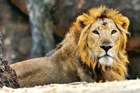

The Asiatic lion is a Panthera leo leo population in India. Its current range is restricted to the Gir National Park and environs in the Indian state of Gujarat.
Asian Lion looks better.
White Lions are the most attractive one.
Black Lions are dangerous.